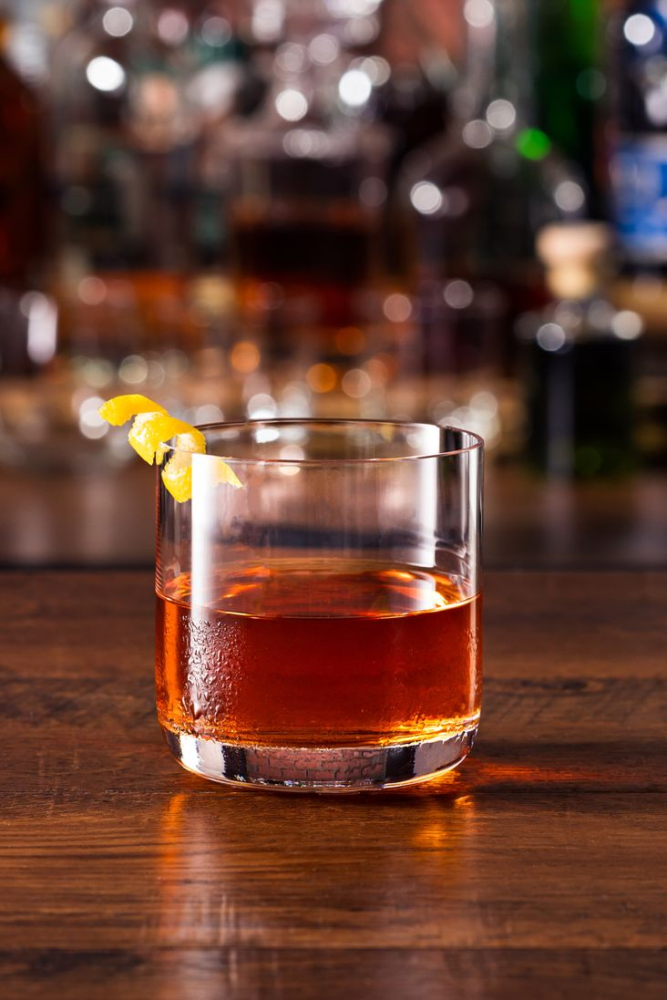

SAZERAC COCKTAIL
Prep time: 5 mins
Yield: 1
Ingredients
Steps
- Fill one rocks glass with ice and set aside to chill.
- In a second rocks glass mix 1 1/2 ounces of Sazerac rye whiskey with four dashes of Peychaud’s bitters and 1/2 ounce of simple syrup. Fill the glass with ice, stir and stir until mixed and well chilled.
- Dump the ice from the first glass and spray two pumps of Herbsaint liqueur from an atomizer into the glass, swirl to coat and dump the excess Herbsaint. Strain the contents of the second glass into the chilled, Herbsaint coated glass and rim the glass with a lemon peel. Do not put the peel in the cocktail, drape it on the side of the glass.